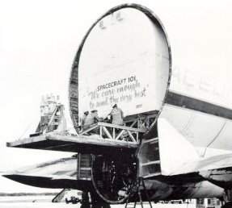

|  | Snug-fitting cocoon housing the Apollo 7 service module is carefully extracted by workmen from the Super Guppy, the specially built cargo transport plane. The SM will be mated with its CM and then fully tested to confirm compatibility. |
| Mini TV camera is demonstrated by engineer. On Apollo 7 it produced the first live television broadcast from space, a seven minute segment with Astronauts Schirra, Eisele, and Cunningham displaying hand-printed signs, and head colds. A similar camera was used on Apollo 8. |